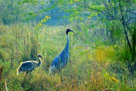
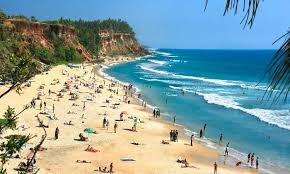
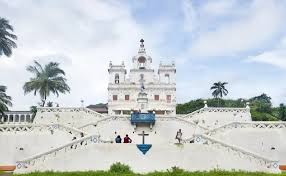
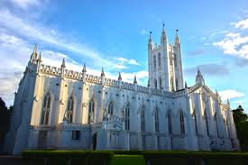
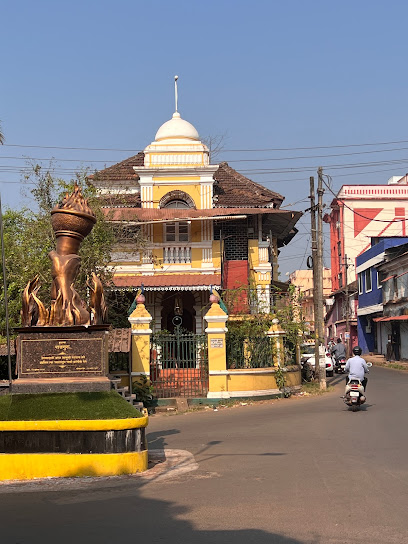
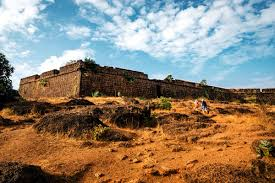
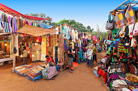

Top Cities
Panaji
- Miramar Beach: A scenic beach located near the city, offering beautiful views of the Arabian Sea and a peaceful environment.
- Basilica of Bom Jesus: A UNESCO World Heritage site, famous for housing the mortal remains of St. Francis Xavier.
- Church of Our Lady of the Immaculate Conception: A historic church known for its stunning Baroque architecture and religious significance.

- Goa State Museum: A museum showcasing the cultural and historical artifacts of Goa, including sculptures and paintings.
- Dona Paula: A popular tourist spot known for its scenic views and the romantic legend associated with it.
- Altinho Hill: A hilltop neighborhood offering panoramic views of the city and a tranquil atmosphere.
Margao
- Colva Beach: A popular and serene beach known for its white sands, palm trees, and vibrant nightlife.
- Church of the Holy Spirit: A beautiful baroque-style church, one of the oldest and most famous in Margao.
- Margao Municipal Garden: A well-maintained public park, perfect for relaxing walks and enjoying the outdoors.

- Rachol Seminary: A historic seminary known for its colonial architecture and religious significance.
- Benaulim Beach: A quieter, scenic beach near Margao, perfect for relaxation and water sports.
- Big Foot Museum: A cultural museum showcasing Goan heritage, lifestyle, and traditions.
Vasco da Gama
- Bogmalo Beach: A serene beach located near the city, known for its clear waters and calm atmosphere.
- Japanese Garden: A beautiful garden overlooking the sea, offering peaceful walking paths and stunning views.
- St. Andrew's Church: One of the oldest churches in Goa, showcasing colonial architecture and rich history.

- Vasco Clock Tower: A historic clock tower located in the heart of the city, a popular landmark for tourists.
- Zuari River: A scenic river offering boat tours and beautiful views of the surrounding landscape.
- Naval Aviation Museum: India's only naval aviation museum, showcasing a collection of aircraft and naval artifacts.
Mapusa
- Mapusa Market: A bustling traditional market offering local produce, spices, and handicrafts, famous for its vibrant atmosphere.
- Shri Bodgeshwar Temple: A revered temple dedicated to Lord Bodgeshwar, popular among locals and tourists alike.
- St. Jerome Church: An ancient church known for its beautiful architecture and historical significance.

- Calangute Beach: A famous beach located nearby, known for its golden sands, water sports, and vibrant nightlife.
- Chapora Fort: A historic fort offering panoramic views of the Arabian Sea, popularized by Bollywood films.
- Anjuna Flea Market: A weekly market selling clothing, jewelry, souvenirs, and local goods, reflecting Goa's eclectic culture.
Ponda
- Shri Mangueshi Temple: One of the most famous temples in Goa, dedicated to Lord Shiva and known for its stunning architecture.
- Shri Shantadurga Temple: A large temple complex dedicated to the goddess Shantadurga, with peaceful surroundings and intricate design.
- Safa Masjid: A historic mosque built during the Adil Shahi dynasty, known for its beautiful architecture and surrounding gardens.

- Goa Sahakari Spice Farm: A popular tourist destination offering tours through lush spice plantations and showcasing traditional Goan agriculture.
- Bondla Wildlife Sanctuary: A small yet beautiful wildlife sanctuary known for its variety of flora, fauna, and a zoo, perfect for nature lovers.
- Ancestral Goa Museum: A museum that offers a glimpse into traditional Goan village life, showcasing local art, culture, and history.
Adventure and Nature
Bhagwan Mahavir Wildlife Sanctuary, Goa
- Dudhsagar Waterfalls: One of India's tallest waterfalls, nestled within the sanctuary, offering breathtaking views and adventure treks.
- Mollem National Park: A part of the sanctuary, home to a rich variety of flora and fauna, perfect for nature lovers and wildlife enthusiasts.
- Trekking Trails: The sanctuary offers several trekking trails through dense forests, ideal for adventure seekers and hikers.
- Jeep Safaris: Explore the sanctuary's dense forests and spot wildlife, including leopards, bison, and various bird species, via guided jeep safaris.
- Tambdi Surla Temple: A 12th-century temple hidden within the sanctuary, a serene place surrounded by nature, showcasing ancient architecture.
- Birdwatching: The sanctuary is a paradise for birdwatchers, with species such as the Malabar Pied Hornbill and Kingfisher commonly sighted.
Cotigao Wildlife Sanctuary
- Adventure and Nature: Cotigao Wildlife Sanctuary offers an exciting blend of adventure and nature, making it perfect for wildlife enthusiasts and nature lovers. The sanctuary is home to lush greenery, diverse flora, and fauna.
- Trekking: Visitors can enjoy trekking through dense forests, where they might spot exotic animals and birds in their natural habitat.
- Tree Top Watchtowers: The sanctuary has watchtowers that allow visitors to observe animals at watering holes, offering a breathtaking view of the surrounding wilderness.

- Wildlife Exploration: Cotigao is home to a variety of species, including leopards, deer, monkeys, and many birds, making it an exciting location for wildlife exploration.
- Eco-tourism: The sanctuary promotes eco-tourism, offering a serene environment for camping, birdwatching, and reconnecting with nature.
- Best Time to Visit: The best time to visit Cotigao is during the monsoon or post-monsoon months when the sanctuary is at its lushest and most vibrant.
Bondla Wildlife Sanctuary
- Nature Trails: Explore scenic trails that offer a glimpse into the rich flora and fauna of the sanctuary.
- Wildlife Spotting: Home to various species including deer, leopards, and numerous bird species.
- Adventure Activities: Engage in activities like trekking and guided safari tours for an immersive experience.

- Bondla Zoo: A small zoo within the sanctuary that houses various species, perfect for family visits.
- Eco-Tourism: Engage in sustainable tourism practices while enjoying the natural beauty of Goa.
- Photography Opportunities: Capture stunning landscapes and wildlife in their natural habitat.
Mhadei Wildlife Sanctuary
- Location: Situated in the Western Ghats of Goa, this sanctuary is rich in biodiversity.
- Flora and Fauna: Home to numerous species of plants, animals, and birds, including endangered species.
- Adventure Activities: Offers opportunities for trekking, bird watching, and nature photography.

- Ecological Importance: Plays a crucial role in the conservation of the Western Ghats ecosystem.
- Nearby Attractions: Close to other natural attractions like the Tambdi Surla Waterfall and Dudhsagar Falls.
- Visiting Tips: Best visited during the cooler months for pleasant weather and enhanced wildlife visibility.
Cultural and Heritage
Old Goa
- Basilica of Bom Jesus: A UNESCO World Heritage Site, this baroque church is known for its stunning architecture and the preserved body of St. Francis Xavier.
- Se Cathedral: One of the largest churches in Asia, famous for its magnificent Portuguese-Gothic architecture and the Golden Bell.
- Church of St. Cajetan: Inspired by St. Peter's Basilica in Rome, this church features beautiful frescoes and intricate carvings.

- St. Augustine Tower: The ruins of a 17th-century church, known for its impressive tower and historical significance.
- Museum of Christian Art: A museum showcasing a collection of religious artifacts and art pieces that reflect Goa's colonial history.
- Arch of the Viceroys: A historic arch that marks the entrance to Old Goa, serving as a reminder of the Portuguese influence in the region.
Shantadurga Temple
- Shantadurga Temple: A revered temple dedicated to Goddess Shantadurga, known for its stunning architecture and serene surroundings.
- Location: Situated in the picturesque village of Kavlem, it holds cultural significance in Goa and is a major pilgrimage site.
- Features: The temple is known for its beautiful idol of the goddess, intricate carvings, and lush green landscapes.

- Architecture: The temple showcases a blend of Hindu and Portuguese architectural styles, making it unique in design.
- Festivals: Major festivals like the Shree Shantadurga Zatra attract thousands of devotees each year.
- Peaceful Environment: The temple is set amidst scenic hills and greenery, offering a tranquil atmosphere for visitors.
Mangeshi Temple
- Mangeshi Temple: One of the largest and most revered temples in Goa, dedicated to Lord Shiva, showcasing stunning architecture and rich cultural heritage.
- History: Established in the 16th century, the temple is known for its intricate design, serene surroundings, and annual festivals that attract devotees from all over.
- Significance: The temple plays a vital role in preserving Goan traditions and is an important pilgrimage site, reflecting the state's rich cultural diversity.

- Architecture: The temple features a beautiful blend of Indo-Portuguese architecture, with a towering whitewashed facade and vibrant interiors.
- Festivals: Major festivals like Mahashivratri and the annual Mangeshi Jatra see a large influx of visitors, highlighting the temple's significance in the local culture.
- Visitor Experience: Visitors can explore the peaceful ambiance, admire the intricate sculptures, and partake in rituals, making it a unique cultural experience.
Savoi Plantation
- Historical Significance: Savoi Plantation is one of the oldest plantations in Goa, showcasing the region's rich agricultural history and heritage.
- Eco-Tourism: Visitors can explore the lush greenery and diverse flora and fauna, making it a perfect spot for nature lovers.
- Cultural Experiences: The plantation offers guided tours that highlight traditional Goan farming practices and the local way of life.

- Local Cuisine: Visitors can sample authentic Goan dishes made from fresh produce sourced directly from the plantation.
- Workshops: The plantation often hosts workshops on organic farming and traditional cooking, enhancing cultural appreciation.
- Photography Opportunities: With its scenic landscapes, Savoi Plantation is a great spot for photography enthusiasts.
Other Attractions
Casino Royale, Goa
- Casino Royale: One of the largest floating casinos in India, offering a variety of gaming options, live entertainment, and dining experiences.
- Gaming Options: Features popular games like Poker, Blackjack, Roulette, and more, catering to both novices and experienced players.
- Entertainment: Regular live performances and shows add to the vibrant atmosphere, making it a great spot for nightlife.

- Dining: Offers a range of dining options, from buffet spreads to fine dining, ensuring a memorable culinary experience.
- Dress Code: Casual yet classy, ensuring a stylish atmosphere for all guests.
- Reservations: Recommended for weekends and special events to avoid long wait times.
Cruise on the Mandovi River
- Description: Enjoy a scenic cruise along the Mandovi River, experiencing the beauty of Goa's landscapes and wildlife.
- Type: Boat cruise featuring music, dining, and entertainment options.
- Best Time: Evening cruises offer stunning sunset views and a magical ambiance.

- Activities: Enjoy live music, dance performances, and delicious Goan cuisine on board.
- Booking: Advance booking is recommended, especially during peak tourist seasons.
- Location: Cruises typically depart from the jetty near Panaji, the capital city of Goa.
Goa
- Goa Science Centre: An interactive science museum featuring hands-on exhibits, a planetarium, and educational programs.
- Basilica of Bom Jesus: A UNESCO World Heritage Site, famous for its stunning architecture and the tomb of St. Francis Xavier.
- Fort Aguada: A well-preserved 17th-century Portuguese fort offering stunning views of the Arabian Sea.
- Calangute Beach: One of the most popular beaches in Goa, known for its vibrant atmosphere and water sports.
- Spice Plantations: Tour the lush spice farms and learn about the cultivation of various spices and herbs.
- Dudhsagar Waterfalls: A stunning four-tiered waterfall located on the border of Goa and Karnataka, perfect for trekking and nature lovers.
Flea Markets
Anjuna Flea Market
- Shopping Stalls: Browse through numerous stalls selling clothing, accessories, jewelry, and handicrafts.
- Food Stalls: Enjoy a variety of local and international cuisines, from Goan delicacies to street food.
- Live Music: Experience live performances from local artists, creating a vibrant and lively atmosphere.
- Art and Crafts: Discover unique handmade items, from artwork to souvenirs that reflect Goa's culture.
- Local Fashion: Find trendy beachwear and accessories, perfect for your time in Goa.
- Night Market: Experience the vibrant atmosphere as the market transforms into a lively hub in the evening.
Mapusa Flea Market
- Local Handicrafts: A variety of handmade crafts, including pottery, textiles, and jewelry, showcasing Goan culture.
- Spices and Herbs: Fresh spices, herbs, and homemade masalas that reflect the rich culinary heritage of Goa.
- Traditional Goan Food: Stalls offering local delicacies like vindaloo, sorpotel, and bebinca.
- Vintage Items: Unique antiques and vintage items, perfect for collectors and souvenir hunters.
- Clothing and Accessories: Colorful clothing, beachwear, and handmade accessories popular among tourists.
- Live Music and Entertainment: Enjoy local music and performances that create a lively market atmosphere.
Calangute Flea Market
- Vibrant Shopping: A lively marketplace offering a variety of goods, including handicrafts, clothing, jewelry, and souvenirs.
- Local Cuisine: Enjoy delicious Goan street food and local delicacies from various food stalls.
- Live Music and Entertainment: Experience local music performances and entertainment that enhance the market's vibrant atmosphere.
.jpg)
- Shopping Experience: A great place to bargain and find unique items, perfect for souvenir hunting.
- Sunset Views: Enjoy stunning views of the sunset, making for a memorable shopping experience.
- Cultural Exchange: A vibrant spot where locals and tourists mingle, showcasing Goa's diverse culture.